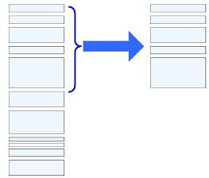

Практичне завдання з теми продакт та спрінт беклог продукта
Метою є вивчення основних подходів до створення product backlog та sprint backlog що є списком вимог, історій, функціональності, які впорядковані по мірі важливості, а також ознайомитися з методикою написання історій користувача (users stories).
Теоретичні відомості
Product backlog - це основа Scrum'a. З нього усе розпочинається. По суті, product backlog є списком вимог, історій, функціональності, які впорядковані по мірі важливості. При цьому усі вимоги описані на зрозумілій для замовника мові.
Елементи цього списку називатимемо "історіями" (user story), а іноді елементами backlog'a.
Опис кожної нашої історії включає наступні поля:
- id - унікальний ідентифікатор - просто порядковий номер. застосовується для ідентифікації історій у разі їх перейменування;
- назва - короткий опис історії. наприклад, "перегляд журналу своїх транзакцій". воно має бути однозначним, щоб розробники і product owner (власник продукту) могли приблизно зрозуміти, про що йде мова і відрізнити одну історію від іншої. звичайні від 2 до 10 слів;
- важливість (importance) - міра важливості цього завдання, на думку product owner'a. наприклад, 10. чи 150. чим більше значення, тим вище важливість;
- попередня оцінка (initial estimate) - початкова оцінка об'єму робіт, необхідного для реалізації історії в порівнянні з іншими історіями. вимірюється в story point'ax. приблизно відповідає числу "ідеального людино-дня"
- як продемонструвати (how to demo) - коротке пояснення того, як завершене завдання буде продемонстровано у кінці спринту. По суті, це простий тестовий сценарій типу "Зробіть це, зробіть те - повинне вийти те-то". Якщо використовується Test Driven Development (розробка через тестування або коротко TDD), то цей опис може послужити псевдокодом для приймального тіста;
- примітки - будь-яка інша інформація: пояснення, посилання на додаткові джерела інформації, і так далі. зазвичай вона представлена у формі коротких тез.
Зазвичай product backlog зберігається в Excel таблиці з можливістю спільного доступу (декілька користувачів можуть редагувати файл одночасно). Хоча офіційно документ належить product owner'y. Приклад документу див. Додаток Б.
Іноді використовуються додаткові поля в product backlog. В основному для того, щоб допомогти product owner визначитися з його пріоритетами.
- категорія (track). наприклад, "панель управління" або "оптимізація". за допомогою цього поля product owner може легко вибрати усі пункти категорії "оптимізація" і встановити їм низький пріоритет;
- компоненти (components) - вказує, які компоненти (наприклад, база даних, сервер, клієнт) будуть зачеплені при реалізації історії. Це поле складається з групи checkbox, які відзначаються, якщо відповідні компоненти вимагають змін. Поле "компоненти" виявиться особливо корисним, якщо у вас декілька scrum команд, наприклад, одна яка працює над панеллю управління і інша, яка відповідає за клієнтську частину. В даному випадку це поле істотно спростить для кожної з команд процедуру вибору історії, за яку вона могла б взятися;
- ініціатор запиту (requestor). Product owner може захотіти зберігати інформацію про усіх замовників, зацікавлених в цьому завданні. Це треба для того, щоб тримати їх в курсі справи про хід виконання робіт;
- id в системі обліку дефектів (bug tracking id) - якщо ви використовуєте окрему систему для обліку дефектів (наприклад jira), тоді в описі історії корисно зберігати посилання на усі дефекти, які до неї відносяться
Наступним етапом є планування спрінта та розробка спринт - плана (sprint backlog). Мета планування полягає в тому, щоб, з одного боку, дати команді досить інформації для спокійної роботи впродовж декількох тижнів, а з іншої - переконати заказника в тому, що команда зможе зробити свою роботу. Підсумком планування є визначені мета спринту, список учасників команди (і міра їх зайнятості, якщо вона не стовідсоткова), Sprint backlog (список історій, які увійшли до спринту), дата демонстрації, місце і час проведення щоденного Scrum. Одне з основних завдань планування спринту - це визначення дати демо. А це означає, що вам доведеться визначитися з довжиною спринту. Короткі спринти - зручні. Вони дозволяють компанії бути максимально "гнучкими", а значить готовою часто коригувати свої плани. Короткий спринт = короткий цикл зворотного зв'язку = часті релізи = швидкі відгуки від клієнтів = менше часу витрачається на роботу в неправильному напрямі = швидке навчання, вдосконалення і так далі.
Але з іншого боку довгі спринти теж хороші. У команди залишається більше часу, щоб набрати темп, більше простору для маневрів, щоб вирішити виниклі проблеми, а також більше часу для досягнення мети спринту, а у вас менше накладних витрат, таких як планування спринту, демо і так далі.
Основне в плануванні спринту - процедура вибору історій, які увійдуть до спринту. А точніше, вибір історій, які треба скопіювати з product backlog'a в sprint backlog.

Рис. 8 - Формування sprint backlog
Кожен прямокутник (рис.8) є історією, розташування якої відповідає рівню її важливості. Найбільш важлива історія знаходиться нагорі списку. Розмір історії (тобто кількість story ротт.'ов) визначає розмір кожного прямокутника. Висота блакитної дужки означає прогнозовану продуктивність команди, тобто кількість історій, яку команда збирається завершити в наступному спринті. Історії мають бути не занадто маленькими, але і не занадто великими (у сенсі оцінок). З іншого боку, історія в 40 story point'o несе в собі ризик того, що до кінця спринту її встигнуть закінчити лише частково, а незавершена історія не представляє цінності для вашої компанії, вона тільки збільшує накладні витрати. Далі - більше: якщо ваша прогнозована продуктивність 70 story point'o, а дві найбільш важливі історії оцінені в 40, те планування декілька ускладниться. Команда стане перед вибором: або включити в спринт тільки одну історію, або узяти на себе нездійсненні зобов'язання, тобто включити обоє.
Для оцінки ресурсів на виконання кожної історії треба застосовувати практику planning poker. Кожен член команди отримує колоду з 13-ти карт, таких же, як на картинці вище. Всякий раз, коли треба оцінити історію, кожен член команди вибирає карту з оцінкою (у story роіпгах), яка, на його думку, підходить, і кладе її на стіл сорочкою вгору. Коли усі члени команди визначилися з оцінкою, карти одночасно розкриваються. Таким чином, члени команди вимушені оцінювати самостійно, а не "списувати" чужу оцінку. Якщо виходить велика різниця в оцінках те цю різницю обговорюють і намагаються виробити загальне розуміння того, що повинно бути зроблено для реалізації цієї історії. Можливо, вони розіб'ють завдання на дрібніші. Після цього команда оцінить історію наново. Цей цикл повинен повторюватися доти поки оцінки не зійдуться, тобто не стануть приблизно однаковими.
Burndown-діаграма. Класичним прикладом оцінки поточного стану проекту є burndown діаграма. Основне призначення діаграми burndown - відображати фактичну трудомісткість, що залишилася, по завданнях ітерації (зелена лінія) і зіставляти її з ідеальною трудомісткістю (червона лінія), що залишилася. По вертикалі відкладений об'єм робіт, наприклад, виражений в годиннику. По горизонталі відкладені календарні дні ітерації..
Рис. 9 - Burndown-діаграма
Червона лінія завжди пряма і виходить з точки такою, що відповідає початку ітерації і початковому об'єму робіт в ітерації. Закінчується на даті завершення ітерації, коли завдань не повинно залишитися зовсім. Таким чином, це ідеальний графік виконання завдань вашою командою тобто що показує скільки годин ви повинні "спалювати" щодня, щоб встигнути виконати усі завдання до закінчення ітерації.
Реальний графік виконання завдань відображається зеленій кривій, що показує реальну трудомісткість, що залишилася, на кожен день ітерації. Якщо крива розташована під червоною лінією - це означає, що ваша команда рухається з достатньою скроростью і устигає завершити роботи по ітерації до наміченого терміну. Якщо зелена крива розташовується над червоною, то вам треба або вплинути на швидкість команди або виключити з ітерації якісь завдання, оскільки інакше ви явно не встигнете до наміченого терміну.
Також на графіці відображається жовта лінія, що характеризує плановий об'єм робіт на кожен день ітерації. У ідеалі жовта лінія повинна залишатися лінією і бути строго горизонтальною, це говоритиме про те початковий об'єм завдань в ітерації не змінився. У реальності вам швидше за все доведеться додавати якісь додаткові завдання, при цьому жовта крива піде вгору. Якщо з ітерації виключаються якісь завдання, то крива піде вниз і це сигнал до того, що склад ітерації був переглянутий.
Порядок виконання роботи
Завдання для виконання роботи беруться з пункту 2.4 Завдання для груп студентів. У проектах 1 - 13 кожній групі студентів необхідно розробити product backlog та sprint backlog, історії користувачів, оцінити ресурси за допомогою використання planning poker згідно до інформації, що наведена у пункті 3.2 Теоретичні відомості.